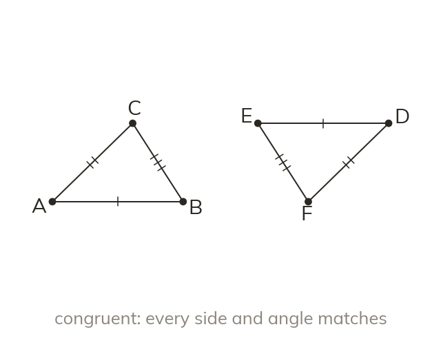

Same shape and same size
Congruent shapes have the same size and shape. One fits exactly on the other, even turned over. Similar shapes share angles but not size.
Congruent shapes are identical in both size and shape, so one fits exactly on the other, even turned over. Similar shapes share their angles but not their size.